Mecanismos de virtualización
Temas de COMPNU · 2/6
2.1 Qué es la virtualización
La virtualización es una abstracción lógica de una infraestructura física: ofrece una vista lógica o virtual que puede ser muy diferente del sistema físico real, y permite ocultar los recursos físicos a las aplicaciones, servicios o usuarios que los usan.
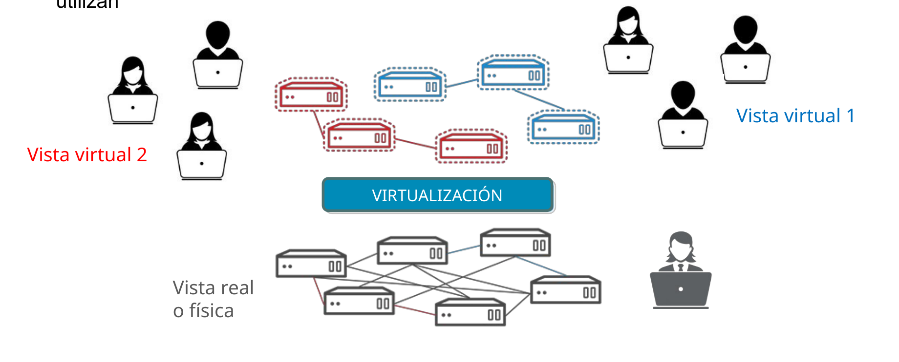
Sobre la misma red de servidores físicos (abajo), la capa de virtualización ofrece a cada grupo de usuarios una vista distinta (vista virtual 1, en azul, y vista virtual 2, en rojo).No es algo nuevo: dos ejemplos clásicos son la memoria virtual (cada proceso ve un espacio de memoria propio y continuo, aunque en realidad está repartido entre la RAM y el disco, y compartido con otros procesos) y los sistemas de ficheros (un único árbol de directorios aunque los datos estén en varios discos).
Analogía: el piso compartido
Un edificio físico (el servidor) se divide en pisos independientes (las máquinas virtuales). Cada inquilino cree tener su casa completa, con su cocina y su baño, y no puede entrar en la de los vecinos, aunque todos compartan los cimientos, el agua y la luz del edificio.
2.2 Evolución de los centros de datos
Los centros de datos han evolucionado para responder de forma más eficiente a la creciente demanda de servicios TIC. El ejemplo de Microsoft muestra cuatro generaciones: servidores en colocation (1989-2005), racks de alta densidad (2007), contenedores con miles de servidores (2008) y módulos prefabricados (IT-PACs, desde 2010), cada una con mejor eficiencia energética (el PUE pasa de ~2,0 a 1,05-1,20).
Esta evolución cambió también la forma en que los proveedores ofrecen sus recursos. Las primeras ofertas de cloud público surgieron de los grandes propietarios de centros de datos privados (Amazon, Google, Microsoft...): su infraestructura estaba muy automatizada y sus capacidades se exponían como servicios para consumo interno; al abrir esas interfaces a los clientes con pago por uso, los clientes accedieron a las mismas capacidades que antes solo se usaban dentro.
La base de esta transformación son la estandarización del hardware, la virtualización y la automatización, en dos pasos: primero la consolidación de servidores (muchas máquinas físicas infrautilizadas pasan a ser VMs en menos servidores) y después la agregación (todos los servidores forman un único conjunto de recursos compartido).
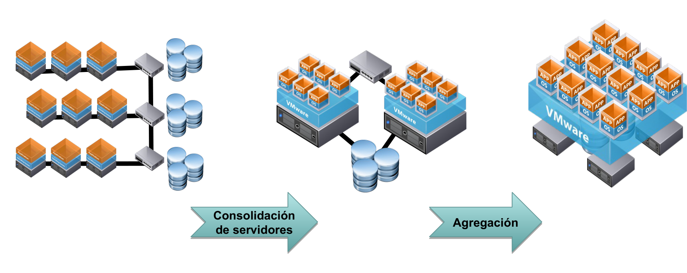
Izquierda: cada aplicación en su servidor físico. Centro: consolidación en pocos servidores virtualizados. Derecha: agregación en una única plataforma de virtualización.La plataforma de virtualización abstrae el hardware y lo comparte entre las VMs, lo que permite gestión centralizada de clusters, optimización del uso de recursos, un alto grado de automatización, alta redundancia, alta disponibilidad y balanceo de carga.
Hoy la virtualización está en todo tipo de componentes (servidores, almacenamiento, red, servicios), y la tendencia es el centro de datos definido por software (SDDC): cualquier recurso (cómputo, red, almacenamiento, seguridad...) se virtualiza y se expone como servicio mediante interfaces estandarizadas, y su software de administración permite automatizar mediante políticas el aprovisionamiento, la operación y la gestión.
2.3 Virtualización de servidores
La virtualización de servidores permite compartir los recursos físicos de un servidor entre varios entornos de ejecución virtualizados, aislados entre sí. Se implementa como una capa intermedia entre el servidor físico y los virtuales, con técnicas software, hardware o ambas. Esos entornos reciben distintos nombres según la tecnología: máquina virtual (VM), servidor virtual, contenedor...
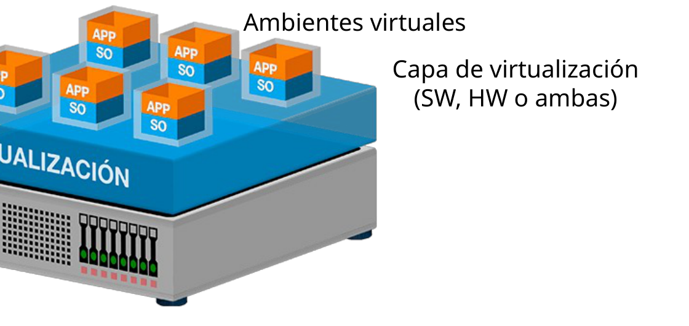
Cada entorno tiene sus propios recursos virtuales y un sistema operativo que puede ser distinto del del servidor físico y del de los demás entornos (Windows, Linux, Solaris en la misma máquina). El SO y las aplicaciones están aislados: por defecto, no pueden acceder a los datos ni recursos de los otros entornos.
Sus beneficios son: varias VMs con distintos SO en un mismo host; aislamiento entre ellas; consolidación de servidores, que optimiza el uso de recursos y reduce costes; agregación de recursos (resource pooling), que facilita la escalabilidad; migración dinámica de VMs entre servidores, que permite balanceo de carga y tolerancia a fallos, y facilitar la administración y automatización.
Tres conceptos básicos:
| Término | Qué es |
|---|---|
| Anfitrión (host) | La máquina física sobre la que se ejecutan una o más máquinas virtuales |
| Invitada (guest) | La máquina virtual que se ejecuta en el host |
| Hipervisor o VMM (Virtual Machine Monitor) | El software que crea y ejecuta las máquinas virtuales |
2.4 Técnicas de virtualización de servidores
Hay tres grandes técnicas: los emuladores de hardware, la virtualización basada en hipervisor (tipos 1 y 2) y la virtualización ligera (por compartición de kernel).
2.4.1 Emulación de hardware
Se emula por software un hardware completo para ejecutar SO invitados sobre el SO del servidor. El SO invitado no sabe que corre sobre hardware emulado. Es útil para desarrollar drivers o sistemas sin tener el hardware real (por ejemplo, programar para ARM en un PC x86), pero su gran desventaja es la sobrecarga: cada instrucción se traduce por software. Ejemplos: Bochs (x86) y QEMU (x86, PowerPC, SPARC, MIPS, ARM).
2.4.2 Virtualización basada en hipervisor
Un hipervisor abstrae el hardware del servidor de los SO y aplicaciones que corren encima, de modo que varias VMs con SO distintos comparten los dispositivos físicos de un mismo servidor.
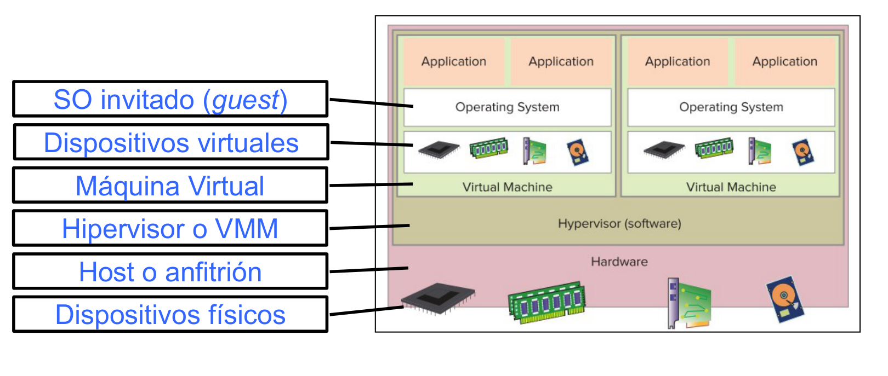
De abajo arriba: dispositivos físicos del host, hipervisor, y en cada máquina virtual sus dispositivos virtuales, su SO invitado y sus aplicaciones.Popek y Goldberg distinguen dos tipos de hipervisor:
| Tipo 1 (nativo o bare metal) | Tipo 2 (hosted) | |
|---|---|---|
| Dónde se ejecuta | Directamente sobre el hardware | Sobre un SO anfitrión |
| Estructura | Implementa las funciones básicas de un microkernel | Capa intermedia entre el SO anfitrión y las VMs |
| Rendimiento y seguridad | Más eficiente y seguro | Menos eficiente (hay un SO de por medio) |
| Uso típico | Servidores y centros de datos | Ordenadores personales, pruebas |
| Ejemplos | XenServer (antes Citrix Hypervisor), VMware ESXi, Microsoft Hyper-V | VMware Workstation, Parallels Desktop, Oracle VirtualBox |
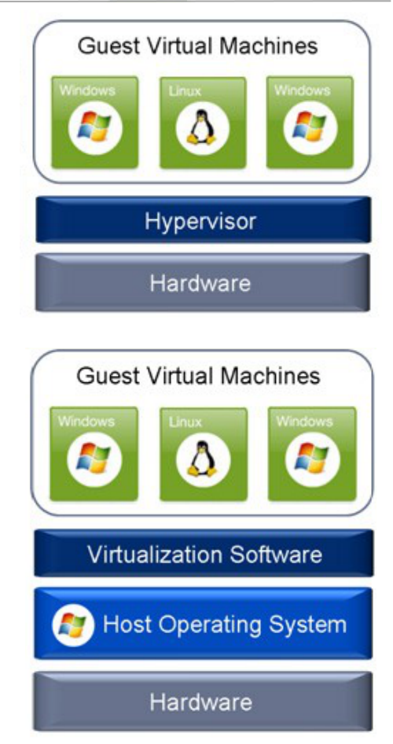
Analogía: el edificio y el piso
Un hipervisor tipo 1 es un edificio construido directamente sobre el terreno para alquilar pisos. Uno tipo 2 es como subarrendar habitaciones de tu propio piso: funciona, pero todo pasa antes por tu casa (el SO anfitrión).
Para entenderlo mejor
Virtualización: diferencia entre hipervisor tipo 1 y tipo 2 — los dos tipos con ejemplos (vídeo, 6:20).
Virtualización a nivel de kernel: KVM
Es propia de Linux: las VMs se ejecutan como procesos normales en el espacio de usuario. KVM (Kernel Virtual Machine) es un módulo del kernel que implementa la infraestructura de virtualización y convierte el kernel de Linux en un hipervisor híbrido (tipo 1 y 2 a la vez). Requiere un procesador con extensiones de virtualización (Intel VT-x, AMD-V...), puede ejecutar distintos SO invitados (Windows, Linux, Solaris, BSD...) y usa QEMU para emular los periféricos (discos, tarjeta de red...).
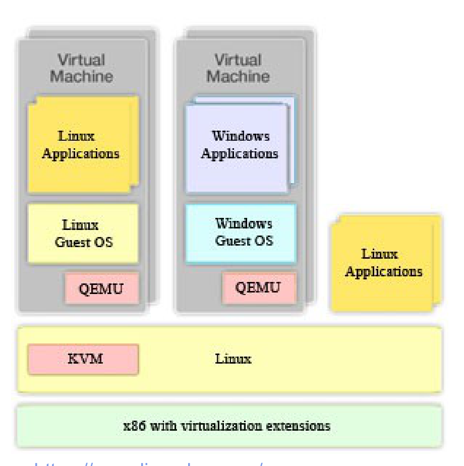
Cada VM es un proceso Linux con su QEMU; el módulo KVM del kernel usa las extensiones de virtualización del procesador x86.2.4.3 Virtualización ligera: contenedores
La virtualización ligera, por compartición de kernel o a nivel de SO es propia de UNIX y Linux. En vez de virtualizar el hardware, todos los entornos comparten el mismo kernel del SO anfitrión, pero se ejecutan en el espacio de usuario aislados entre sí gracias a mecanismos del kernel como chroot, cgroups (limitan los recursos) y namespaces (aíslan lo que cada entorno "ve"). Los entornos reciben distintos nombres: contenedores, particiones, jails, servidores virtuales privados (VPS)...
Cada programa solo puede usar los recursos de su entorno, y como no hay que emular nada, se pueden ejecutar muchísimos entornos con rendimiento igual al nativo. La contrapartida es que todos deben usar el mismo kernel (no puedes ejecutar Windows en un contenedor de Linux). Ejemplos: Solaris Zones, FreeBSD Jails, HP-UX Containers, OpenVZ, Podman, Linux Containers (LXC) y Docker.
| Máquina virtual (hipervisor) | Contenedor (kernel compartido) | |
|---|---|---|
| Qué se virtualiza | El hardware | El sistema operativo |
| SO invitado | Cada VM lleva su propio SO completo, que puede ser distinto | Comparten el kernel del anfitrión |
| Rendimiento | Sobrecarga del hipervisor | Igual al nativo |
| Densidad | Pocas VMs por servidor | Muchos contenedores por servidor |
| Aislamiento | Fuerte | Menor (comparten kernel) |
Analogía: casas frente a habitaciones
Una VM es una casa completa con sus cimientos, fontanería y electricidad propias (su SO). Un contenedor es una habitación con cerradura dentro de un mismo piso: comparte cocina y baño (el kernel), por eso caben muchas más y se montan en segundos.
Para entenderlo mejor
¿Virtualización vs contenedores? Máquinas virtuales vs Docker explicado — la diferencia de fondo entre ambos enfoques (vídeo, 7:30).
2.5 Virtualización en la arquitectura x86
2.5.1 El problema
Popek y Goldberg establecieron tres requisitos para que una arquitectura sea virtualizable: equivalencia (un programa se comporta igual en la VM que en la máquina real), control de recursos (el VMM controla todos los recursos virtualizados) y eficiencia (la mayoría de instrucciones se ejecutan directamente, sin intervención del VMM).
Para protegerse, el SO distingue espacio de kernel y espacio de usuario. Las llamadas al sistema (instrucciones privilegiadas) generan un trap (una excepción) que fuerza el paso a modo kernel. Las instrucciones sensibles son las que modifican recursos del sistema (E/S, control de memoria...) y solo deberían ejecutarse en modo kernel. Como la VM se ejecuta en espacio de usuario, no puede ejecutar instrucciones sensibles por sí misma: el hipervisor tiene que capturarlas y procesarlas.
El problema de x86 es que tiene instrucciones sensibles que no son privilegiadas: no generan trap, así que el hipervisor no se entera de que se ejecutan. El ejemplo es POPF, que saca datos de la pila al registro EFLAGS; algunos de sus bits (como el flag de interrupción) solo deberían cambiarse en modo kernel, y la instrucción se comporta distinto en modo usuario que en modo kernel. Así, el SO invitado podría ejecutarla y modificar recursos del sistema sin que el hipervisor lo impida.
Analogía: el portero que no ve una puerta
El hipervisor es un portero que vigila las puertas que dan a zonas restringidas (instrucciones privilegiadas): cuando alguien intenta abrirlas, suena una alarma (trap) y él decide. En x86 hay alguna puerta a zona restringida sin alarma (POPF): alguien puede pasar sin que el portero se entere.
2.5.2 Tres soluciones
| Modo | Cómo funciona | Ventajas | Inconvenientes |
|---|---|---|---|
| Virtualización completa con traslación binaria | Inspecciona bloques de código en ejecución buscando instrucciones problemáticas y las reemplaza dinámicamente por llamadas al hipervisor | Ejecuta guests sin modificar | Rendimiento más pobre |
| Paravirtualización | Se modifica el kernel del SO invitado para sustituir las instrucciones problemáticas por llamadas al hipervisor (hypercalls) | Buen rendimiento | Hay que modificar el SO invitado (difícil en algunos, como Windows) |
| Asistida por hardware (native virtualization o HVM) | Usa extensiones del procesador (Intel VT-x o VMX, AMD-V): el hipervisor atrapa directamente las instrucciones problemáticas | Buen rendimiento, sin emular ni modificar el SO invitado | Requiere un procesador moderno |
Ejemplos de virtualización asistida por hardware: Xen HVM, KVM, VirtualBox.
2.5.3 Cómo funciona VMX (Intel VT-x)
VMX añade al procesador un nuevo modo de operación con dos niveles: VMX Root, el modo privilegiado donde corre el hipervisor con control total del procesador, y VMX Non-Root, donde corre el SO invitado, que cree tener la máquina completa. Para cada VM hay una estructura VMCS (Virtual Machine Control Structure) que guarda el estado del invitado y los controles que deciden qué eventos provocan una salida al hipervisor.
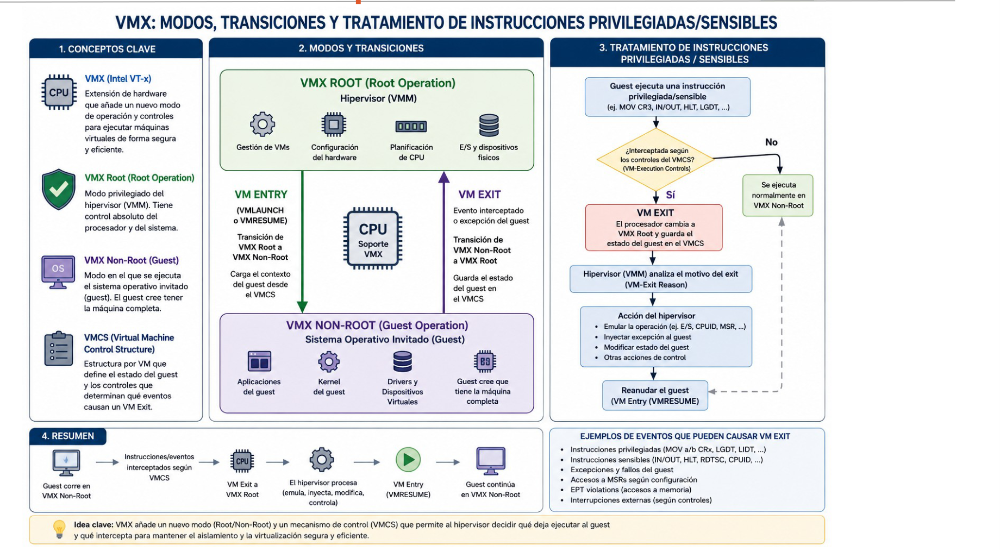
El ciclo es:
- El invitado se ejecuta en VMX Non-Root.
- Si ejecuta una instrucción privilegiada o sensible (por ejemplo
MOV CR3,IN/OUT,HLT,LGDT), el procesador comprueba si está interceptada según la VMCS. Si no lo está, se ejecuta con normalidad. - Si sí, se produce un VM Exit: el procesador guarda el estado del invitado en la VMCS y pasa a VMX Root.
- El hipervisor analiza el motivo (VM-Exit Reason) y actúa: emula la operación, inyecta una excepción al invitado, modifica su estado, etc.
- Con un VM Entry (
VMLAUNCHoVMRESUME) carga el contexto del invitado desde la VMCS y vuelve a VMX Non-Root.
Pueden provocar un VM Exit: instrucciones privilegiadas (MOV a/desde CRx, LGDT, LIDT...), instrucciones sensibles (IN/OUT, HLT, RDTSC, CPUID...), excepciones y fallos del invitado, accesos a MSRs según la configuración, violaciones de EPT (accesos a memoria) e interrupciones externas. La idea clave: VMX añade un modo Root/Non-Root y un mecanismo de control (VMCS) con el que el hipervisor decide qué deja ejecutar al invitado y qué intercepta, manteniendo el aislamiento de forma segura y eficiente.
2.6 Gestores de máquinas virtuales
Permiten crear, editar, iniciar y parar múltiples VMs en un cluster, muestran estadísticas de rendimiento y utilización de las VMs en cada host y pueden trabajar con distintos hipervisores y tipos de virtualización. El más conocido en open source es libvirt, un demonio y una API que gestiona plataformas de virtualización con múltiples hipervisores, y que usan herramientas como virt-manager, GNOME Boxes o virsh. Hay también herramientas comerciales como SolarWinds Virtualization Manager o WhatsUpGold Virtualization Monitoring Tools.
2.7 Virtualización ligera: por qué usar contenedores
La segunda parte del tema profundiza en los contenedores (introducidos en 2.4.3) con Docker. El punto de partida es el problema del despliegue en la industria del software. Antes había aplicaciones monolíticas, ciclos de desarrollo largos, un entorno único y escalado lento. Ahora hay servicios desacoplados, mejoras rápidas e iterativas, entornos múltiples y escalado rápido. Eso genera una "matriz infernal": muchas piezas de software distintas (web estática, base de datos, colas, frontend…) que deben funcionar en muchos entornos distintos (portátil del desarrollador, servidor de QA, CPD del cliente, nube pública, clúster de producción).
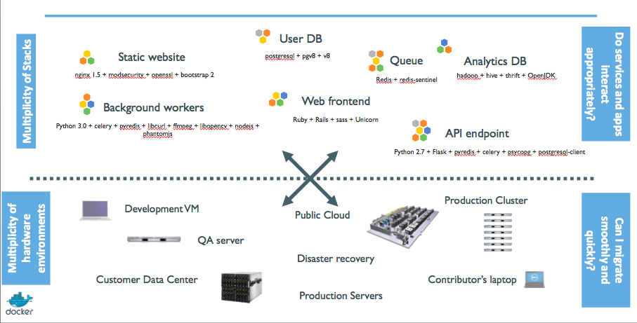
La analogía que usa Docker es la del transporte de mercancías. Antes, cada tipo de carga (barriles, pianos, coches, sacos) se cargaba de forma distinta en cada medio (camión, tren, barco, grúa). El contenedor estándar lo resolvió: se carga cualquier cosa dentro, se sella y viaja por cualquier medio sin que nadie tenga que saber qué lleva. Eso abarató muchísimo el transporte e impulsó la globalización (hoy el 90 % de la carga viaja en contenedores estándar).
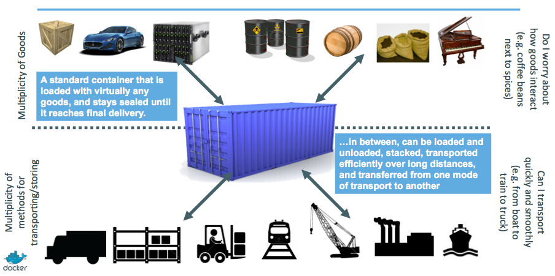
Docker aplica la misma idea al software: un motor que encapsula cualquier aplicación en un contenedor ligero, portable y autosuficiente, que se manipula con operaciones estándar y se ejecuta igual en prácticamente cualquier plataforma de hardware.
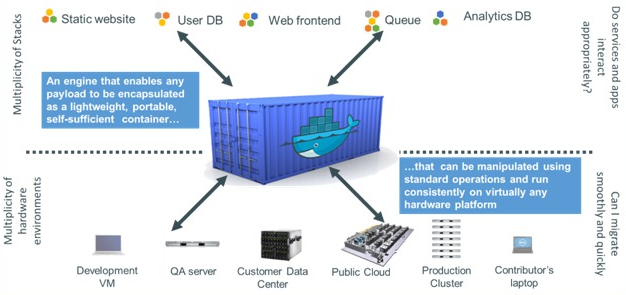
2.7.1 Cómo funciona un contenedor
Un contenedor aísla la ejecución de una aplicación en un contexto privado. Es "como la virtualización, pero sin virtualización": es agnóstico respecto al contenido y al "transportador" (el host), ofrece aislamiento y automatización y tiene sobrecargas muy bajas comparado con una VM. Se le describe como un super chroot (chroot on steroids); la idea se usó durante años en Solaris y se emplea mucho en los planificadores de los centros de datos.
La diferencia con una VM está en las capas: cada VM lleva su SO invitado completo encima de un hipervisor, mientras que los contenedores solo llevan la aplicación y sus librerías (bins/libs) y comparten el SO del host a través del Docker Engine.
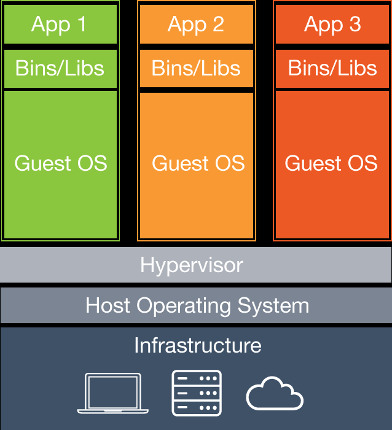
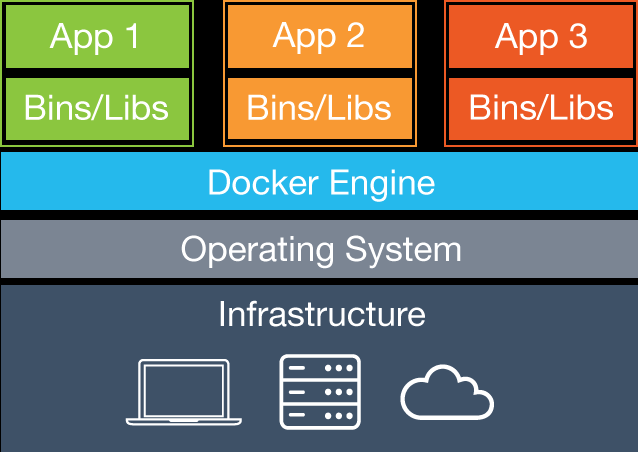
Frente a un proceso normal, un contenedor es un conjunto de procesos aislados con su propio espacio de procesos, su propia interfaz de red y su propia vista del sistema de ficheros, pero sin un /sbin/init propio y con el kernel compartido con el host.
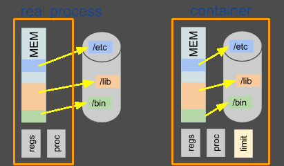
Las dos tecnologías del kernel Linux que lo hacen posible son:
- cgroups (control groups, desde el kernel 2.6.24): limitan, contabilizan y aíslan el uso de recursos (CPU, memoria, disco, E/S, red…) de un grupo de procesos. Deciden cuánto puede usar el contenedor.
- Namespaces (desde el 2.4.19): particionan los recursos del kernel, de modo que dos conjuntos de procesos ven conjuntos diferentes de recursos (procesos, red, ficheros, usuarios…). Deciden qué ve el contenedor.
Analogía
Los namespaces son las paredes de la habitación (no ves lo que hay en las otras); los cgroups son el contador de luz y agua con límite (no puedes gastar más de lo asignado).
2.7.2 Casos de uso y tecnologías
Hay dos usos típicos. El contenedor de aplicaciones ejecuta un solo servicio o aplicación por contenedor; es la base de los microservicios, donde una aplicación grande se divide en servicios pequeños y, en vez de actualizar toda la aplicación, solo se actualizan los servicios afectados. El contenedor de sistema operativo es un entorno virtual que comparte el kernel con el host, aislado en su espacio de usuario, que puede ejecutar varios procesos y servicios; resulta práctico para ejecutar distintas versiones de Linux en la misma máquina.
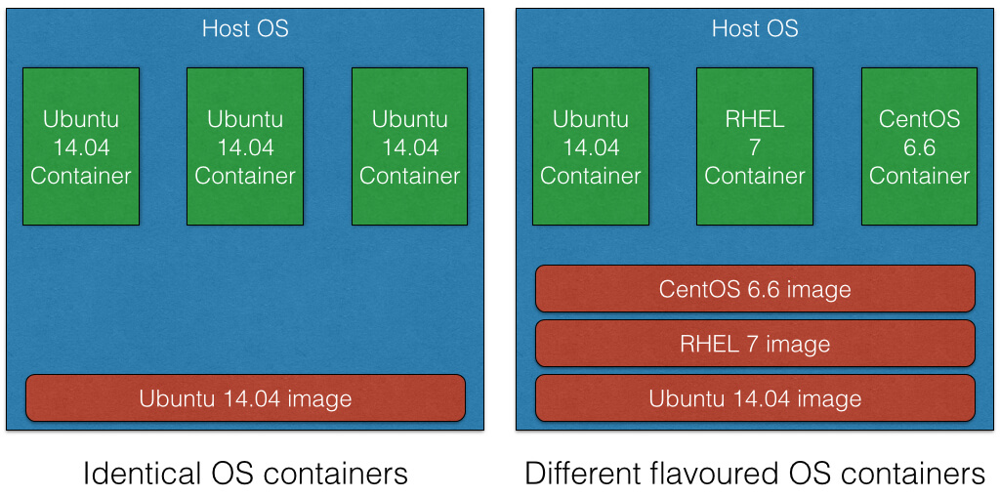
| Tecnología | Características |
|---|---|
| Docker | El más popular; orientado a microservicios; gran ecosistema; ediciones personal, pro, team y business |
| Podman | Motor de RedHat para desarrollar, gestionar y ejecutar contenedores OCI (el estándar abierto de contenedores); interfaz casi idéntica a la de Docker; no necesita permisos de administrador |
| Linux Containers | Contenedores de sistema operativo: ejecuta un SO completo en un contenedor; proyecto paraguas de Incus, LXC, LXCFS y otros |
| Singularity | Para aplicaciones científicas y HPC; versiones open source (SingularityCE/Apptainer), Pro y Enterprise; soporte nativo de OpenMPI, aceleradores gráficos y redes rápidas (InfiniBand, Intel OPA) |
Hay más ejemplos y comparativas en Wikipedia: OS-level virtualization (enlazado en las diapositivas).
2.8 Docker
"Docker" designa dos cosas. La plataforma: Docker Engine, Docker Desktop, Docker Compose, Docker Swarm, Docker Hub, Docker Datacenter, etc. Y la compañía, Docker Inc., que empezó en 2008 como la francesa dotCloud Inc. y es el principal patrocinador del proyecto: contrata a mantenedores y contribuidores, proporciona la infraestructura y mantiene Docker Hub.
Los productos son Docker Personal (gratuito para uso personal, educativo o pequeña empresa), Pro (más capacidades e integración con herramientas de desarrollo), Team (colaboración y mejoras de seguridad) y Business (grandes empresas). Varios componentes son open source.
2.8.1 Docker Engine y Docker Desktop
Docker Engine es el motor de contenedores que se ejecuta sobre Linux. Incluye el servidor dockerd, el CLI y la API que los comunica. Para usar el CLI hacen falta privilegios de administrador: se ejecuta con sudo o se añade el usuario al grupo docker.
Docker Desktop es una interfaz gráfica para Linux, Windows y macOS con la misma experiencia en los tres. Se ejecuta sobre una VM Linux ligera, así que no necesita privilegios de administrador. Se pueden tener ambos y cambiar entre ellos con docker context.
2.8.2 Arquitectura
Docker es una aplicación cliente-servidor:
- El Docker Engine (o daemon) recibe y procesa las solicitudes que llegan por la API de Docker.
- El cliente Docker habla con el demonio a través de esa API; incluye el CLI, con el que enviamos comandos.
- El Docker Hub Registry es una colección de imágenes públicas; el demonio se comunica con él mediante la API del registro.
Los comandos tienen la forma docker [OPTIONS] COMMAND (en Windows, desde PowerShell); docker --help da la ayuda general y docker COMMAND --help la de cada comando. La documentación está en docs.docker.com y la referencia del CLI.
Analogía
El cliente es el camarero que toma nota (docker run …), el demonio es la cocina que prepara los platos (crea y ejecuta contenedores) y Docker Hub es el proveedor de ingredientes (imágenes) al que la cocina llama cuando le falta algo.
2.9 Contenedores e imágenes Docker
2.9.1 El primer contenedor
docker container run -it ubuntu /bin/bash
Esto ejecuta un nuevo contenedor a partir de la imagen ubuntu (si no está en local, se descarga de Docker Hub). La opción -it es -i (interactivo: conecta la entrada estándar del contenedor) más -t (asigna un pseudo-terminal), y /bin/bash es el programa que se ejecuta dentro. Aparece un prompt como root@0bc82356b52d9:/#: estamos dentro de un Ubuntu (por ejemplo, cat /etc/issue muestra Ubuntu 24.04.3 LTS).
Las diapositivas proponen comprobar qué es compartido y qué aislado: la versión del kernel (uname -r) es la misma que la del host, porque se comparte; el sistema de ficheros (ls -la /) es distinto y un fichero creado en el contenedor no aparece en el host; el proceso con PID 1 dentro del contenedor es el bash; y un proceso como yes > /dev/null & aparece tanto en el contenedor como en el host (ps -edf | grep yes), pero con PID distinto en cada uno (efecto de los namespaces). También se puede instalar software dentro (apt update, apt install figlet, figlet Hola mundo!).
Al escribir exit, el contenedor pasa a estado stopped: sigue existiendo en disco, pero libera CPU y memoria. docker ps lista los contenedores activos y docker ps -a todos. Si se lanza otro docker container run igual, el nuevo contenedor no tiene figlet: parte de la imagen ubuntu original, sin los cambios del anterior.
2.9.2 Ciclo de vida de un contenedor
| Acción | Comando |
|---|---|
| Ver ID o nombre de los contenedores | docker container ps -a (columna CONTAINER ID y NAMES, p. ej. angry_hugle) |
| Reiniciar uno parado | docker container start angry_hugle |
| Conectarse a él | docker container attach <ID> (puede hacerse desde varios terminales; debe estar corriendo) |
| Borrarlo | docker container rm <ID> |
| Borrarlo automáticamente al pararse | opción --rm en docker run |
| Ponerle nombre | opción --name reloj |
| Desconectarse sin pararlo | secuencia ^P ^Q (Ctrl-P Ctrl-Q) |
| Ejecutarlo en segundo plano | opción -d (daemon); Docker devuelve el ID |
| Ver su salida | docker container logs reloj; --tail 3 (solo el final); --follow (en tiempo real, como tail -f) |
| Pararlo | docker container stop: envía TERM y, si a los 10 s no ha parado, KILL |
| Matarlo | docker container kill: KILL inmediato |
| Ejecutar otro proceso dentro | docker container exec -it <ID> /bin/sh |
El ejemplo de las diapositivas es docker container run -it --name reloj --rm jpetazzo/clock, un contenedor que imprime la hora indefinidamente (se para con ^C). Con -d sigue en background mientras Docker guarda su salida en los logs; docker container ps -q muestra solo los IDs y -l el último contenedor creado.
docker container exec permite, por ejemplo, abrir una shell en un contenedor que ya está corriendo. No está pensado para producción, pero es muy útil durante el desarrollo.
2.9.3 Limitar recursos
Por defecto, un contenedor puede usar todos los recursos que le permita el SO del host. Se limitan (gracias a los cgroups) con --memory o -m (memoria máxima, mínimo 4 MB) y --cpus (CPU disponible):
docker container run -d --rm --memory=1g --cpus=0.5 jpetazzo/clock
Más opciones en la documentación de límites de recursos (enlazada en las diapositivas).
2.9.4 Imágenes y capas
Una imagen es una colección de ficheros + metadatos: los ficheros del sistema raíz del contenedor. Es un sistema de ficheros de solo lectura formado por capas apiladas; cada capa añade, cambia o elimina ficheros respecto a la anterior (es una versión diferencial). Varias imágenes pueden compartir capas, lo que ahorra disco, tiempo de transferencia y memoria. Un contenedor es un conjunto encapsulado de procesos que se ejecutan sobre una copia de lectura y escritura de ese sistema de ficheros: una capa writable encima de la imagen.
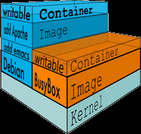
Si la imagen es de solo lectura, ¿cómo se cambia? No se cambia: se crea un contenedor a partir de ella, se hacen los cambios en el contenedor y, cuando estamos satisfechos, se convierten en una nueva capa, creando una nueva imagen que apila esa capa sobre la anterior. Hay dos métodos: docker container commit, que guarda los cambios de un contenedor en una nueva capa y crea una imagen como copia del contenedor; y docker build, que usa un Dockerfile y hace una construcción repetible (ver 2.11).
Analogía
Una imagen es como un pastel de capas plastificado: puedes mirarlo pero no tocarlo. Cada contenedor recibe encima una lámina de papel transparente en la que sí puede escribir. Si te gusta lo dibujado, lo plastificas (commit) y tienes un pastel nuevo con una capa más; los de debajo siguen intactos y se reutilizan.
Para entenderlo mejor
Docker Imágenes vs Contenedores: Diferencias y Conceptos Fundamentales — la imagen como plantilla de solo lectura y el contenedor como instancia en ejecución (vídeo, 2:27).
2.9.5 Nombres de las imágenes
| Espacio de nombres | Ejemplo | Qué es |
|---|---|---|
| Root namespace | ubuntu, busybox |
Imágenes oficiales, incluidas en el Hub por Docker Inc. aunque suelen mantenerlas terceros. Hay imágenes mínimas (busybox), distribuciones base para construir encima (ubuntu, fedora) y servicios listos para usar (postgresql, redis) |
| User namespace | jpetazzo/clock |
Imágenes de usuarios y organizaciones del Hub: jpetazzo es el usuario y clock el repositorio |
| Self-hosted | myregistry.example.com:5000/myprivate/image |
Imágenes en registros de terceros: dirección, puerto, repositorio y tag |
2.9.6 Manejo de imágenes
docker image ls lista las imágenes locales (repositorio, tag, ID, fecha y tamaño). docker search wordpress busca por palabras clave en el registro remoto (no se pueden listar todas); el resultado indica si son Official (del root namespace) o Automated (construidas automáticamente por Docker Hub). También se puede buscar en hub.docker.com.
Una imagen se descarga implícitamente al hacer docker container run si no está en local, o explícitamente con docker image pull wordpress:php8.1-apache. Lo que va tras los dos puntos es el tag (la versión); si no se indica, se usa latest. Los tags garantizan que se usa la misma versión en todas partes (repetibilidad). Docker descarga todas las capas necesarias. Para eliminar una imagen: docker image rm imageID o docker image rm Repository:tag.
2.9.7 Construir una imagen de forma interactiva
- Crear un contenedor a partir de una imagen base.
- Instalar software manualmente dentro. Con
docker container diff containerIDse ven las diferencias con la imagen base. - Convertir el contenedor en una nueva imagen:
docker container commit containerID nombre_imagen:mitag. - Ejecutar un contenedor con la nueva imagen:
docker container run -it nombre_imagen.
Opcionalmente se le pone otra etiqueta con docker image tag nombre_imagen otratag.
2.10 Redes y volúmenes
2.10.1 Mapeo de puertos
Los contenedores tienen direcciones privadas, así que sus servicios no son accesibles desde fuera directamente: hay que exponerlos puerto a puerto, y mapearlos a puertos del host para evitar conflictos (dos contenedores pueden usar internamente el puerto 80, pero no el mismo puerto del host).
docker container run -d --rm -P nginx
Ejecuta el servidor web nginx en segundo plano; -P (--publish-all) publica sus puertos para que sea accesible desde otros equipos. docker container ps muestra 0.0.0.0:32768->80/tcp: el servidor escucha en el puerto 80 del contenedor, asignado al 32768 del host, así que se accede con http://localhost:32768. docker container port <ID> da la misma información (útil en scripts).
Los puertos también se fijan a mano con -p, con la convención puerto-host:puerto-contenedor. Por ejemplo, docker container run -d -p 80:80 nginx expone un servidor en el puerto 80, y docker container run -d -p 8080:80 -p 8000:80 nginx expone un segundo servidor en los puertos 8080 y 8000.
Analogía
El contenedor es un piso dentro de un edificio (el host) con número de puerta interno (puerto 80). Desde la calle solo se ve el portal; el mapeo 8080:80 es el cartel del portal que dice "para el piso del nginx, llama al timbre 8080".
Para entenderlo mejor
DOCKER EXPLICADO FÁCIL – Capítulo 3 — puertos y volúmenes con un contenedor de nginx, paso a paso (vídeo, 12:54).
2.10.2 Redes Docker
docker network create localnet crea una red y docker network ls las lista: por defecto existen bridge, host y none, además de las creadas (con su driver y su ámbito). Conceptualmente, una red Docker es un conmutador virtual; puede ser local (un solo host) o global (varios hosts). Cada red define una subred, y los contenedores conectados reciben una IP de ella; el rango se puede elegir: docker network create --subnet 10.66.0.0/16 mired.
En el ejemplo de las diapositivas se crean dos contenedores alpine en la misma red (--net localnet), llamados srv1 y srv2, y desde uno se hace ping srv1: el nombre se resuelve a su IP (172.18.0.2). Es decir, los contenedores solo se pueden contactar si están en la misma red, y se accede a ellos por su nombre. Se les puede dar otro nombre en la red con --hostname o --network-alias. Un contenedor en marcha se puede añadir a otra red con docker network connect localnet2 srv3, y con --alias dbase recibe un nombre nuevo en esa red.
Para ver la IP y demás datos de un contenedor se usa docker container inspect (con --format para filtrar, p. ej. '{{.NetworkSettings.Networks.pubnet.IPAddress}}'). Para fijar la IP se usa --ip, que debe estar dentro de la subred de la red: docker container run ... --net pubnet --ip 10.90.99.99 -d nginx.
2.10.3 Controladores de red
| Controlador | Qué hace |
|---|---|
| bridge | Por defecto. El contenedor tiene su interfaz eth0 virtual conectada al bridge docker0 |
| host | El contenedor usa directamente las interfaces de red del host |
| overlay | Redes multi-host, para Docker Swarm |
| ipvlan | Control total sobre las direcciones IPv4 e IPv6 |
| macvlan | Asigna una dirección MAC al contenedor, que aparece en la red como un dispositivo físico |
| none | Sin red (solo loopback) |
note
La diapositiva pone "node" para el controlador sin red; el nombre correcto es none, como aparece en el listado de docker network ls.
El controlador se elige al crear la red (--driver ...) o al ejecutar docker run --net ... en el caso de none o host.
Con bridge, el contenedor obtiene una eth0 virtual (más su loopback) conectada al bridge Docker (docker0 por defecto, configurable con --bridge). Las direcciones son de una subred privada interna (172.17.0.0/16 por defecto, configurable en el demonio). El tráfico saliente pasa por una regla de iptables MASQUERADE (el host traduce la IP privada a la suya) y el entrante por una regla DNAT (que redirige el puerto del host al del contenedor). El contenedor puede tener sus propias rutas y reglas de iptables.
Con host (docker run --net host ...), el contenedor ve y usa las interfaces del host, sin NAT ni bridge, así que el rendimiento es nativo. Se usa en aplicaciones sensibles al rendimiento (VoIP, juegos, streaming…).
2.10.4 Volúmenes
Lo que se escribe en la capa del contenedor desaparece al borrarlo. Los volúmenes permiten guardar datos fuera de esa capa y compartir directorios entre contenedores, o entre el host y uno o varios contenedores. Acceden directamente al disco, así que su rendimiento de E/S es exactamente el del host. Al hacer un commit, el contenido de los volúmenes no se incluye en la imagen.
| Acción | Comando |
|---|---|
| Crear | docker volume create website |
| Listar | docker volume ls |
| Inspeccionar | docker volume inspect website |
| Borrar | docker volume rm compartido |
Un volumen se monta con -v (o --volume), indicando volumen:ruta-en-el-contenedor:
docker container run --rm -d -p 80:80 -v website:/usr/share/nginx/html nginx
# alternativa: --mount source=website,target=/usr/share/nginx/html
El mismo volumen se puede usar a la vez en otro contenedor; por ejemplo, para editar la web con vi desde un alpine: docker container run --rm -v website:/website -w /website -it alpine vi index.html. La opción -w fija el directorio de trabajo dentro del contenedor (la pregunta que plantea la diapositiva).
El volumen también se crea al lanzar el contenedor (docker run -it --name alpha -v compartido:/var/log:z ubuntu bash), y otro contenedor puede montar los mismos volúmenes con --volumes-from alpha. Si no se indica nombre, se crea un volumen sin nombre. La opción z se usa en sistemas con SELinux para indicar que el volumen se va a compartir; sin ella, otro contenedor no podría acceder por permisos.
Para compartir un directorio del host se pone su ruta absoluta como nombre del volumen: docker run -v /path/en/el/host:/path/en/el/contenedor:z image. Es útil, por ejemplo, para editar código en el host y compilarlo o ejecutarlo en el contenedor.
2.11 Dockerfile y Docker Compose
Crear imágenes a mano es tedioso y propenso a errores; el proceso se automatiza con un Dockerfile.
2.11.1 Dockerfile
Un Dockerfile es una receta de construcción de una imagen: una serie de instrucciones que dicen cómo construirla. docker build crea la imagen a partir de él. Ejemplo, en un directorio mydockerimage con un fichero de texto llamado Dockerfile:
FROM ubuntu
RUN apt-get -y update
RUN apt-get -y install figlet
FROM indica la imagen base, y cada RUN se ejecuta durante la construcción (normalmente para instalar paquetes; -y evita que apt-get pregunte). Se construye con docker build -t figlet-image . (-t es el tag y . el directorio del Dockerfile) y se comprueba con docker image ls. La imagen resultante es igual que la construida a mano.
Caché. Si se vuelve a construir, es instantáneo: tras cada paso Docker guarda una instantánea y, antes de ejecutar un paso, comprueba si ya ha hecho exactamente la misma secuencia. Compara las cadenas exactas, así que RUN apt-get install progA progB es distinto de RUN apt-get install progB progA. Se fuerza la reconstrucción con docker build --no-cache.
Sintaxis shell frente a exec. Casi todas las instrucciones admiten dos formatos. En formato shell (RUN apt-get install figlet), el comando se ejecuta dentro de una shell (/bin/sh -c comando). En formato exec o JSON (RUN ["apt-get", "-y", "install", "figlet"]) se ejecuta directamente. Se recomienda exec para evitar problemas con las señales del SO (si hay una shell por medio, la señal de parada le llega a ella y no al programa).
2.11.2 Comando por defecto: CMD y ENTRYPOINT
CMD define el comando por defecto al arrancar el contenedor, p. ej. CMD ["figlet", "-f", "script", "hola"] (-f elige la fuente). Puede estar en cualquier punto, pero cada CMD anula al anterior. Si al lanzar el contenedor se indica otro comando (docker container run -it --rm figlet-image /bin/bash), este sustituye al CMD.
ENTRYPOINT define un comando base (con sus parámetros) al que se añaden los argumentos de la línea de comandos. Con ENTRYPOINT ["figlet", "-f", "script"], ejecutar docker container run --rm figlet-image "hola mundo!" dibuja "hola mundo!". También cuenta solo el último.
Juntos, ENTRYPOINT da el comando y CMD sus parámetros por defecto (ambos en formato exec):
FROM ubuntu
RUN apt-get update
RUN ["apt-get", "install", "figlet"]
ENTRYPOINT ["figlet", "-f", "script"]
CMD ["hola mundo!"]
Sin argumentos, se ejecuta figlet -f script "hola mundo!"; con argumentos, estos sustituyen al CMD. Por eso docker run -it --rm figlet-image ls no lista nada: solo dibujaría la palabra "ls". Para ejecutar otra cosa hay que cambiar el ENTRYPOINT: docker container run --rm --entrypoint ls figlet-image -la /usr (los parámetros van tras el nombre de la imagen), o --entrypoint bash para una shell.
| Al lanzar el contenedor… | Solo CMD | ENTRYPOINT + CMD |
|---|---|---|
| …sin argumentos | Ejecuta el CMD | ENTRYPOINT + parámetros del CMD |
| …con argumentos | Los argumentos sustituyen al comando | Los argumentos sustituyen al CMD y se pasan al ENTRYPOINT |
Analogía
ENTRYPOINT es la máquina de café (siempre hace café) y CMD es el botón preseleccionado ("café solo"). Si no pulsas nada, sale café solo; si pulsas "con leche", sale café con leche. Para obtener té hay que cambiar de máquina (--entrypoint).
2.11.3 Copiar ficheros: COPY
COPY copia ficheros del directorio del Dockerfile a la imagen. Ejemplo: compilar un hola.c (un puts("Hola mundo!")):
FROM ubuntu
RUN apt-get update
RUN apt-get install -y build-essential
COPY hola.c /
RUN make hola
CMD /hola
build-essential trae el compilador y make; COPY pone el fichero en la raíz del contenedor. Se construye con docker build -t holamundo-image . y se lanza con docker container run --rm holamundo-image. Docker cachea también los COPY: si el fichero no cambia, no repite el paso. Se pueden copiar directorios recursivamente. Para compilar de verdad conviene usar otro directorio (con WORKDIR) y, mejor aún, la imagen oficial de gcc.
2.11.4 Resumen de instrucciones
Las instrucciones se ejecutan en orden y cada una crea una nueva capa; se guardan en caché y, si no hay cambios, se reutiliza la capa. FROM debe ser la primera instrucción no comentada, las líneas que empiezan por # son comentarios y solo cuentan el último CMD y el último ENTRYPOINT.
| Instrucción | Para qué |
|---|---|
FROM |
Imagen base |
RUN |
Ejecutar comandos durante la construcción |
CMD / ENTRYPOINT |
Comando por defecto / comando base |
COPY |
Copiar ficheros del directorio local a la imagen |
ADD |
Como COPY, pero descomprime zip y tar y puede descargar ficheros remotos (sin desempaquetarlos). Es mejor usar RUN con curl |
MAINTAINER |
Autor del Dockerfile (opcional, recomendado) |
EXPOSE |
Declara los puertos en los que escucha el contenedor (EXPOSE 80 443, EXPOSE 53/tcp 53/udp) |
WORKDIR |
Directorio de trabajo para las instrucciones siguientes, y también para CMD y ENTRYPOINT al arrancar |
ENV |
Variables de entorno de los contenedores (ENV WEBAPP_PORT 8080); también con docker run -e VAR=valor |
VOLUME |
Crea un volumen en el contenedor (VOLUME /uploads) |
USER |
Usuario o UID con el que se ejecutan las instrucciones; puede cambiarse varias veces |
Sobre EXPOSE: los puertos expuestos son accesibles desde otros contenedores del mismo host, pero para que lo sean desde el host o el exterior hay que publicarlos: -p <puerto> publica un puerto aunque no esté en EXPOSE, y -P publica todos los declarados en EXPOSE. docker container port lista las asignaciones.
Más detalles en la referencia del Dockerfile y las buenas prácticas (enlazadas en las diapositivas).
2.11.5 Docker Compose
Con docker run o un Dockerfile se manejan uno o dos contenedores. Para una pila compleja de varios contenedores se usa Docker Compose: se describe la pila en un fichero YAML docker-compose.yml, se ejecuta docker compose up y Compose descarga las imágenes, construye los contenedores y los arranca, configurando enlaces, volúmenes y demás opciones. Viene instalado con Docker Desktop (se comprueba con docker compose version).
services:
www:
build: www
ports:
- 8000:5000
user: nobody
environment:
DEBUG: 1
command: python counter.py
volumes:
- www-shared:/var/www
redis:
image: redis
volumes:
- www-shared:/web
volumes:
www-shared:
El ejemplo define dos servicios: www, que se construye a partir del Dockerfile del directorio www, publica el puerto 5000 del contenedor en el 8000 del host, se ejecuta como usuario nobody con la variable DEBUG=1 y lanza python counter.py; y redis, que usa la imagen redis. Ambos comparten el volumen www-shared.
En el fichero, services es obligatorio (los servicios que se arrancan), mientras que networks (redes en las que colocar los contenedores) y volumes (volúmenes usados y compartidos) son opcionales. Cada servicio debe tener build (ruta a un Dockerfile) o image (imagen local o de un registro); command equivale a CMD y ports a la opción -p. Más opciones en la referencia de Compose.
| Comando | Qué hace |
|---|---|
docker compose up |
Crea y arranca la pila (-d: en segundo plano) |
docker compose config |
Verifica la sintaxis del fichero |
docker compose build |
Construye los servicios que indican un Dockerfile |
docker compose ps |
Lista los contenedores de la pila |
docker compose stop / start |
Detiene / arranca los contenedores |
docker compose kill |
Mata todos los contenedores |
docker compose rm |
Elimina los contenedores |
docker compose down |
Detiene y elimina los contenedores |
Para entenderlo mejor
What is Docker Compose? | Docker Concepts — idea de Compose en dos minutos, del canal oficial (vídeo, 2:33, inglés).
Docker Compose in 12 Minutes — ejemplo práctico de una app con varios servicios en docker-compose.yml (vídeo, 12:00, inglés).
2.12 Ideas clave
- Virtualización: abstracción lógica que oculta los recursos físicos (ejemplos clásicos: memoria virtual, sistemas de ficheros).
- Los CPD evolucionaron con estandarización + virtualización + automatización (consolidación → agregación) hacia el SDDC; los clouds públicos nacieron de abrir la infraestructura interna de Amazon, Google o Microsoft.
- Virtualización de servidores: varios entornos aislados (con SO distintos) en un servidor. Conceptos: host, guest, hipervisor/VMM. Beneficios: consolidación, aislamiento, pooling, migración dinámica.
- Técnicas: emulación (QEMU, Bochs; lenta), hipervisor tipo 1 bare metal (ESXi, Hyper-V, XenServer) y tipo 2 hosted (VirtualBox, VMware Workstation), KVM (híbrido, necesita VT-x/AMD-V, usa QEMU) y contenedores (comparten kernel; chroot, cgroups, namespaces; Docker, LXC, Podman).
- x86: requisitos de Popek y Goldberg (equivalencia, control, eficiencia); problema = instrucciones sensibles no privilegiadas (POPF). Soluciones: traslación binaria (sin modificar, lenta), paravirtualización (rápida, SO modificado), asistida por HW (VT-x/AMD-V).
- VMX: modos Root (hipervisor) / Non-Root (invitado), VMCS, VM Exit / VM Entry.
- Gestión de VMs: libvirt (virt-manager, virsh).
- Docker: soluciona el despliegue (muchas pilas × muchos entornos) como el contenedor de transporte. Contenedor = procesos aislados con kernel compartido; se basa en cgroups (cuánto usa) y namespaces (qué ve). Usos: contenedor de aplicación (microservicios) o de SO. Alternativas: Podman, LXC, Singularity.
- Arquitectura cliente-servidor: cliente/CLI → API → Docker Engine (
dockerd) → registro Docker Hub. Docker Desktop corre sobre una VM Linux ligera. - Imagen = capas de solo lectura; contenedor = imagen + capa escribible. Nuevas imágenes con
commitodocker build. Nombres: root, user y self-hosted; tags (latestpor defecto). - Comandos clave:
run -it/-d/--rm/--name,ps -a,start,attach,exec,logs,stop(TERM + KILL a los 10 s),kill,rm; límites--memory,--cpus. - Redes: puertos con
-p host:contenedoro-P; red = switch virtual con subred; contenedores de la misma red se ven por nombre; drivers bridge (defecto, NAT con iptables), host (rendimiento nativo), overlay, ipvlan, macvlan, none. Volúmenes-v: datos persistentes, E/S nativa, no entran en el commit. - Dockerfile: FROM, RUN, CMD, ENTRYPOINT, COPY, ADD, EXPOSE, WORKDIR, ENV, VOLUME, USER; cada instrucción = una capa cacheada; formato exec recomendado. Docker Compose: pila multicontenedor en
docker-compose.yml(servicesobligatorio;buildoimage),docker compose up/down.